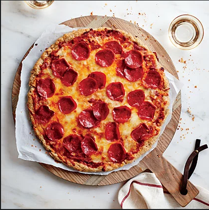

Pizza

Ingredients:
- 1 pre-baked crust
- 1/2 cup pesto
- 1 ripe tomato
- 1/2 cup green bell pepper
- 1 (2 oz) chopped black olives
- 1/2 small red onion
- 1 (4 oz) can artichoke hearts
- 1 cup rumbled feta cheese
Steps:
- Preheat oven to 450 degrees F (230 degrees C).
- Spread pesto on pizza crust. Top with tomatoes, bell peppers, olives, red onions, artichoke hearts and feta cheese.
- Bake for 8 to 10 minutes, or until cheese is melted and browned.